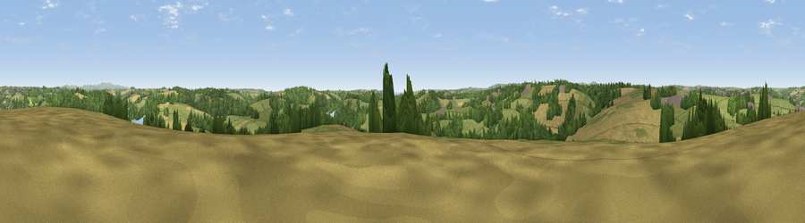

Porth Kea Hill
#26209 in England · top 53% of its area beats it · near MalpasWhere it is
The exact computed spot (SW 83075 41775). Click the marker for map links.
The view, rendered

A 360° render of this exact spot computed from the terrain model, tree cover and land cover — summer colours, afternoon light, calibrated against photographs of famous viewpoints. Real trees, hedges and buildings will differ in detail.
The panorama
Grey silhouette: terrain skyline in each direction (720 bearings, Earth curvature and refraction included). Dashed green: skyline with trees (+15 m) and buildings (+8 m) as obstacles. Blue strip: how far the ground is visible on each bearing.
Where the view opens
Wedge length = distance to the farthest visible ground on that bearing (vegetation-aware). Rings at 10, 25 and 50 km.
What fills the view
47% grassland · 26% woodland · 23% cropland · 3% built-up · 1% water
Angular shares of the visible panorama (visual magnitude), not map area. Landscape diversity 0.52 (0–1 Shannon).
Key numbers
More beautiful places nearby
The staircase of upgrades: each row has a higher view potential than everything closer. Driving times are estimates from straight-line distance, calibrated against real road routing — check an actual route before setting out.
| Place | Direction | Drive | Score |
|---|---|---|---|
| Viewpoint near Feock | SSE · 4 km | ~10 min | 52.5 |
| Curgurrell Hill | ESE · 7 km | ~14 min | 71.5 |
| Drake's Downs | SSE · 11 km | ~20 min | 71.9 |
| Viewpoint near Lanner | W · 11 km | ~21 min | 74.5 |
| St Agnes Beacon | WNW · 15 km | ~26 min | 86.1 |
| Viewpoint near Foxhole | NE · 19 km | ~33 min | 86.4 |
| Viewpoint near Stenalees | NE · 23 km | ~38 min | 88.0 |
| Viewpoint near Crackington Haven | NNE · 60 km | ~83 min | 88.1 |
50.23608, -5.04328 · source: dobih hill · position refined by local search. Computed location — check access rights before visiting.